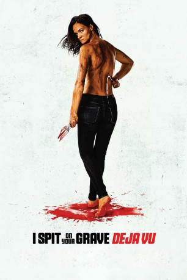

#11156 I Spit on Your Grave: Deja Vu *ENGLISCH*
 gesehen am 29.04.2019
gesehen am 29.04.2019
 
 IMDB-Wertung: 2.4 / 10
IMDB-Wertung: 2.4 / 10  Metascore: 0
Metascore: 0 
Jennifer Hills is back. Forty years after 1978's I Spit On Your Grave shocked the world with its story of a beautiful career woman assaulted and left for dead, and her notorious revenge on those responsible, cinema's most lethal lady vengeance returns in the most anticipated sequel of all time. Reuniting star Camille Keaton and original director Meir Zarchi, I Spit On Your Grave: Déjà vu sends now successful writer Jennifer Hills hurtling back to where it all began - to face the wrath of the families of those she murdered. Kidnapped along with her daughter scream queen star Jamie Bernadette, it's a tense game of hunt - or be hunted - against a lethal gang of degenerates overseen by a violently unhinged matriarch Maria Olsen. Meir Zarchi delivers the next explosive saga in the most controversial tale of an eye-for-an-eye ever committed to celluloid. Some grudges refuse to be buried- David Maquire.
nur Englisch
Jahr: 2019
Dauer: 148 Minuten
FSK:
Land: USA Studio: IIcTonspuren:
Untertitel:
Auflösung: 1080p (1920x802) Größe: 10752 MB
Genre: Thriller, Horror
Regisseur: Meir Zarchi
Drehbuch: Meir Zarchi
Soundtrack:
Darsteller:
- Camille Keaton als Jennifer Hills
- Jamie Bernadette als Christy Hills
- Maria Olsen als Becky
- Jim Tavaré als Herman
- Jonathan Peacy als Kevin
- Jeremy Ferdman als Scotty
- Holgie Forrester als Millie Stillman
- Roy Allen III als Henry Stillman
- Alexandra Kenworthy als Beady Eyes
- Terry Zarchi als Johnny Jr.
- Phillip K. Galaras als Leroy
- Kelci C. Magel als Restaurant Patron
- Andrea Nelson als Katie the Fan
- Tony Snegoff als Parking Lot Man
- Ben Whalen als Benjamin
- Tammy Zarchi als Melissa Stillman
- Meir Zarchi als Priest
- Adam Cerro als Waiter
- Dave Moore als The Reverend
- Jan O'Connell als Parking Lot Woman
- Sean Wyn als Waiter
Datei: X:\FSK18-Collections\I Spit On Your Grave\I Spit on Your Grave Deja Vu ENGLISCH (2019, FSK, 1920x802).mkv seit 29.04.2019
Festplatte: FSK18
 Es gibt insgesamt 9 Filme in der Gruppe 'FSK18-Collections\I Spit On Your Grave'
Es gibt insgesamt 9 Filme in der Gruppe 'FSK18-Collections\I Spit On Your Grave'